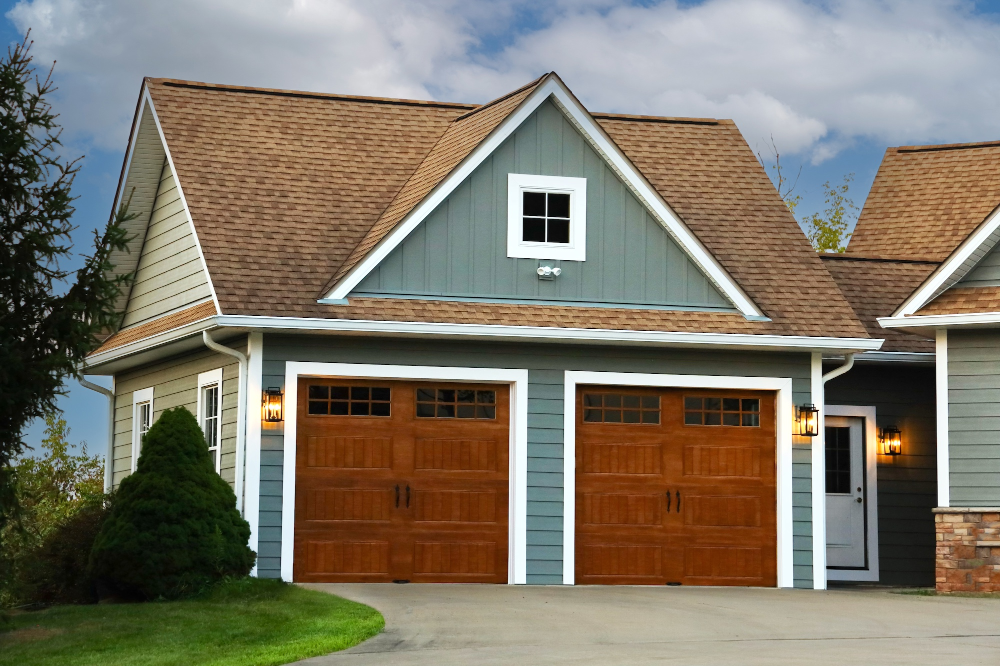

What We Install
Siding Options for Every Home & Budget

Most Popular
Vinyl Siding
The most popular siding choice for Michigan homeowners — durable, low-maintenance, and available in dozens of colors and profiles. Insulated vinyl options improve your home's energy efficiency.
- Traditional Lap / Clapboard
- Dutch Lap Profile
- Insulated Vinyl (energy upgrade)
- Shake & Shingle Style
- Wide variety of colors

Premium Durability
Fiber Cement Siding
James Hardie and similar fiber cement products are the gold standard for Michigan homes. Resists moisture, rot, insects, and freeze-thaw cycles — with the look of real wood without the maintenance.
- James Hardie HardiePlank
- HardieShingle & HardieTrim
- 30-year product warranty
- Paintable — any color
- Fire & pest resistant

Modern Farmhouse Style
Board & Batten Siding
Board and batten siding delivers a bold, contemporary look that's become one of the most requested styles in Michigan. Pairs beautifully with mixed materials and modern home designs.
- Vertical panel profile
- Available in vinyl or fiber cement
- Wide color range
- Mixed-material applications
- Accent sections & full exteriors

Natural Look
Engineered Wood Siding
Engineered wood (LP SmartSide and similar) gives you the warmth and texture of real wood with far superior durability. Treated to resist moisture, impact, and decay — ideal for Michigan's climate.
- LP SmartSide & similar brands
- Wood grain texture
- Impact & moisture resistant
- 50-year substrate warranty
- Lap, panel, and shake profiles